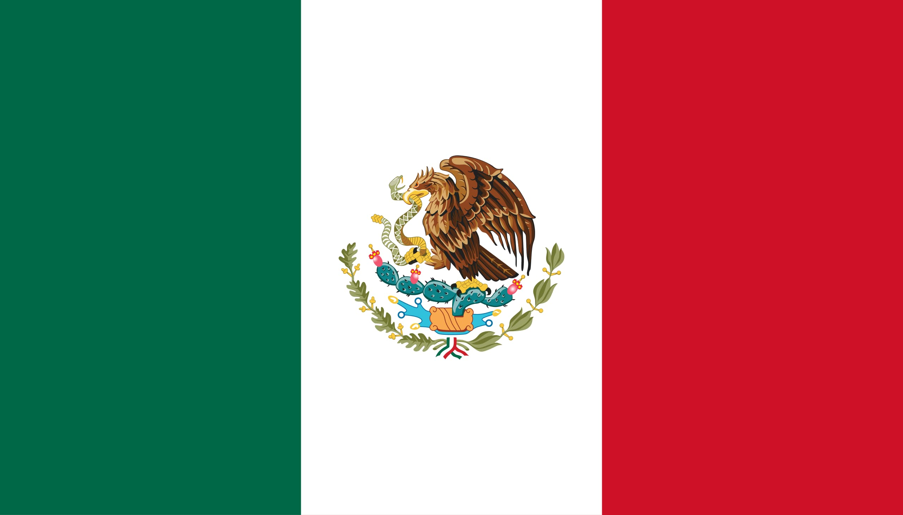

Sofia Gallardo
About Me
My name is Sofia. I was born in Mexico and i live here. I am currently studying cybersecurity on my own, web development and working on this web development and programming certificate; although my interests lie more with biotechnology, astronomy and music. This site is a part of my WDD 131 - Dynamic Web Fundamentals course.
Mexico
Mexico is a country between the United States and Central America, known for its beaches on the Pacific and the Gulf of Mexico, and its diverse landscape of mountains, deserts, and jungles. Ancient ruins, such as Teotihuacan and the Mayan city of Chichen Itza, are scattered throughout the country, as are cities from the Spanish colonial era. In the capital, Mexico City, elegant shops, renowned museums, and gourmet restaurants are part of modern life.